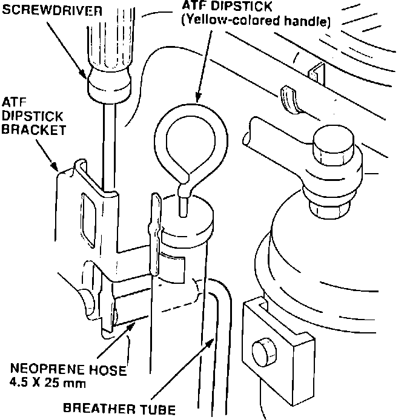
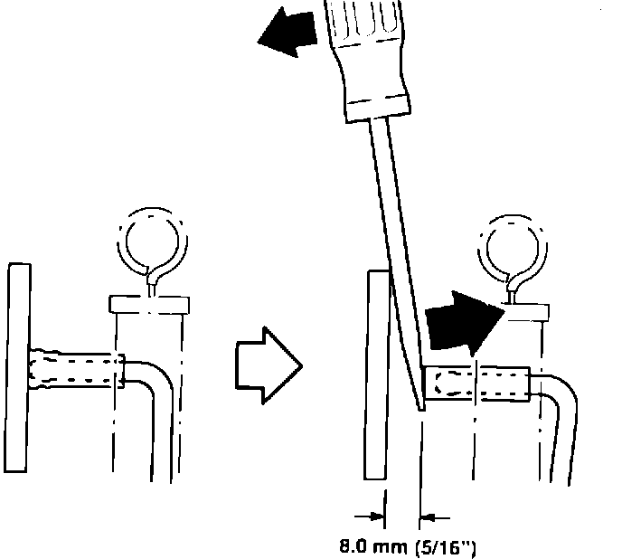

A/T - Dipstick Pushes Out of the Dipstick Tube
91acura05
August 12, 1991
BULLETIN NO.
91-040
YEAR MODEL VIN APPLICATION
1991 LEGEND See Vehicles
Affected
Automatic Transmission Breather Tube Modification
SYMPTOM
Automatic transmission ATF dipstick (yellow-colored handle) pushes out of the dipstick tube.
VEHICLES AFFECTED
4-doors VIN JH4KA76... MC040007 to MC051052
Coupes VIN JH4KA82...MC010201 to MC012448
PROBABLE CAUSE
The neoprene hose end of the automatic transmission breather tube is too close to, or blocked off by, the ATF dipstick bracket.
CORRECTIVE ACTION
Inspect all vehicles within the affected VIN range for a blocked off breather tube hose. If the breather tube hose is blocked, do the following:

1. Locate the transmission breather tube. It is to the right of the ATF dipstick (yellow-colored handle).
2. Insert a flat-tip screwdriver between the breather tube and the ATF dipstick bracket.

3. Bend the breather tube about 8.0 mm (5/16") away from the ATF dipstick bracket. Check the end of the breather tube once the screwdriver is removed, to be sure the breather tube does not spring back.
WARRANTY INFORMATION
In warranty: The normal warranty applies.
Out-of-warranty: Any repair performed after warranty expiration may be eligible for goodwill consideration by the District Service Manager. You must request consideration, and get the DSM's decision, before starling work.
Operation number: 218345
Flat rate time: 0.2 hour
Failed P/N: 21321-PY3-A00
Defect code: 054
Contention code: D99